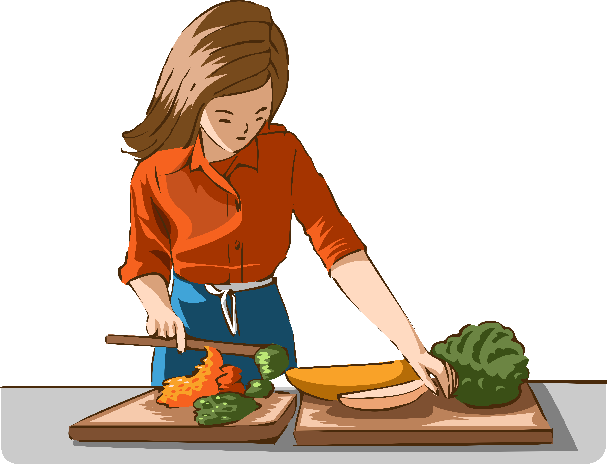
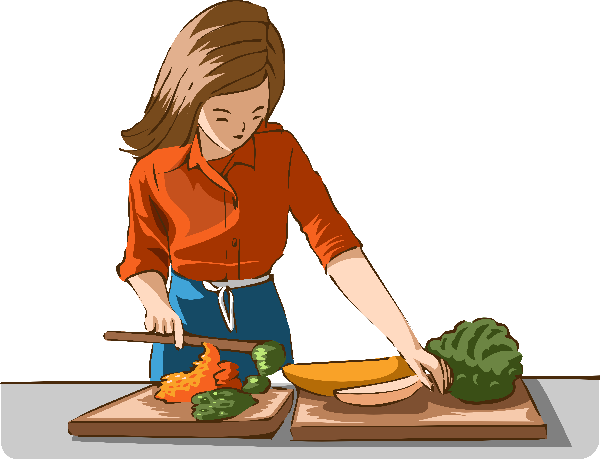
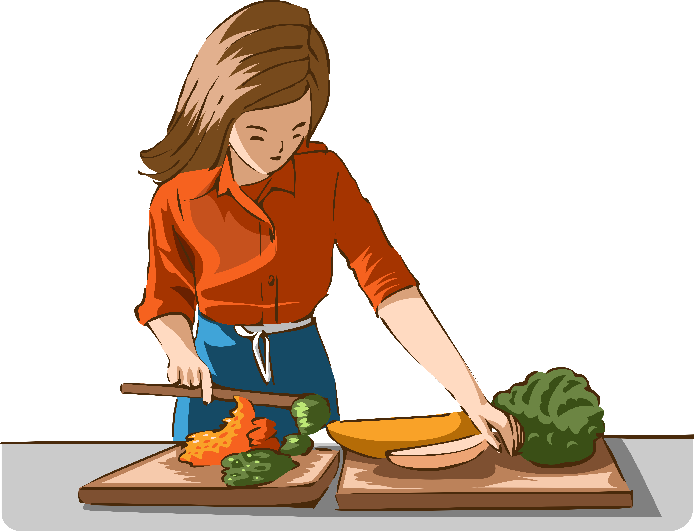

I am an early bird.Usually I wake up at 3;30am,every morining.After wake up
I start to do my morning stretching for 1 hour.So it is usully 5:00am after
finish my yoga.
Choose your bedtime.
"Healthy habits to become morning person"
first all, we all have to sleep early at every night.
Time must be around 10pm.And your sleeping time is need to be perfect And
it is have to be 7 or 8 hours a day.
Second, you have to drink a cup of water as soon as
you get up in the morning.And a person have to drink almost 2liters in
a day.It helps you to keep your body.
Thrith,Breakfast is the most important in start of day.
And it have to perfect with protein,Victiman,and other complements things.
and you could have a cup of coffee os milk or tea as well.
And next tip is doing yoga stretching or workout,Which help us to
be more active and make fresh our minds .At the least, you have to do workout
for 30mins in a day.
Next important thing is taking a shower in the early morning.Most
people like to take a bath with cold water it makes us fresh and clean
our body from dirty.Somepeople like to do after waking up.
Please,write down your suggestion on my tips.

"How to spent happily in your free time"
Meditation is a good thing to do in your
free times.It makes you to be active person And
to relax your complex mindful.
Playing some sport makes us more strong than other
people and it is good for our healthy as well.
And if you want to be a person who knows any knowlages
in the world,all you need to is
just one is reading.
Everybody has worse time in their life.
And may be this is happening because of our jobs, family problem
about bad nightbours and has a lot of bad peoblem. So we have to
reduce our stress and pressure. We need to relax our brain and our
mind. Just stay quiet place and closing eyes
and do not think anythings.
And you know, plants are vital for world to be beautiful.
And planting is the one that makes fresh
our mind . So you could try to plant in your free
time.
Sometime , when you think that life is boring,I would
like to mention is just try how to cook
and cooking for people who you love.
Music is the most pleasent songs in the world. and like
playing some instrument is good for us such as
playing guiltar when you feel you are tried and in your free time.
Giving your time to your lover and your family is a good
for us.It make us close to eachother more and more.
"Eating schudle and plan"
Meal
Eating time
Food name
Breakfast
7:00AM
Milk and bread
Lunch
11:00AM
Rice and curry
Snack
1:30AM
Potato chip
Fasting
2:00AM
---------------
Here is the benifits of eating fresh healthy furit
in your daily lifeüçãüçåüççü•≠üçé.
Advantage of eating apple
It provides your heart and to fresh your brain,
and most people say that If you eat
an apple everyday,You do not totally need a doctor'.
And there has a lot of protein which ishelp
you to mantain your weight.
"Mistake of doing exercise üèãÔ∏è‚Äç‚ôÄÔ∏èüèãÔ∏è‚Äç‚ôÇÔ∏èüí™"
Most people say, Why we are not changing eventhought we do
exercises a lot and eat less in daily their life.And sometime, we do not eat
anything expert water but their body is not change anymore.
So what do you think of their problem.?Here, some tip that I collect And
find for doing mistake during worout.
There are 10 mistakes that you make in your daily lifestyle.
1. Lack of sleeping
If you want to change your body,but your
sleeping time is still messing is not good for you.I would like
to mention, is you need to hit the sack at around 10:00pm everynight.
This is vital ,when it comes to lose weight.
 
